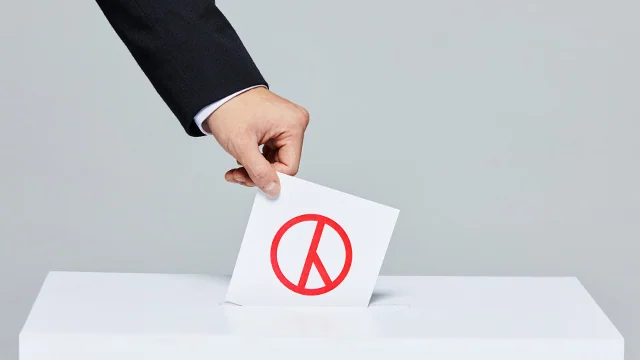
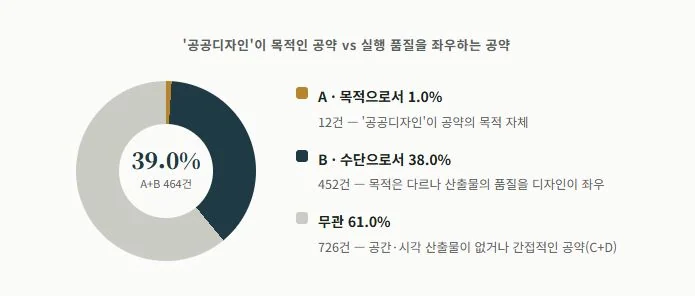
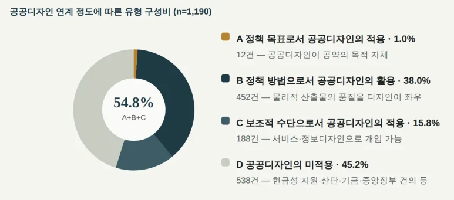
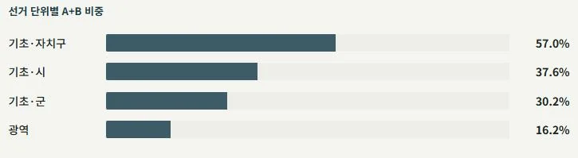
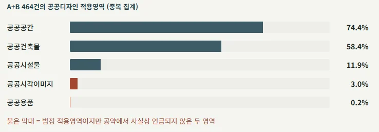
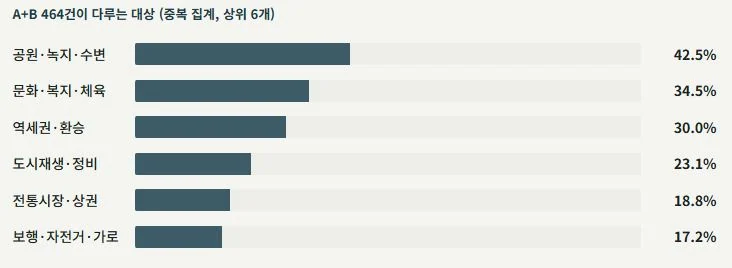

정책을 돕는 공공디자인
기획107. [정책x공공디자인] 정책을 돕는 공공디자인
지방선거가 끝나면 늘 남는 질문이 있다. 당선자들이 내건 공약을 통해 우리가 매일 머무는 공간, 내가 사는 이 지역은 어떻게 달라질까?
정책을 돕는 공공디자인
제9회 지방선거는 무엇을 약속했나
이번 제9회 전국동시지방선거 공약을 공공디자인의 시선으로 다시 읽어보면, 앞으로 우리 삶 곳곳에서 마주하게 될 변화들을 미리 가늠해 볼 수 있다. 표심을 얻기 위한 다양한 공약 속에서도, 여러 지역에 걸쳐 반복적으로 등장한 공공디자인 관련 공약들을 추려 순위를 매겨봤다. 지역과 정당을 가리지 않고, '공공디자인'이라는 단어가 직접 쓰이지 않았더라도 안전과 배려, 편의와 공공의 가치를 지향하는 흐름만큼은 공통적으로 확인됐다.
© KBS뉴스
공약 속 공공디자인을 찾아라
당선인 238명이 제출한 공약, 1190건
'공공디자인'과 연관된 공약, 464건
전체 비중의 약 39%
중앙선거관리위원회가 공개한 당선인 238명의 공약 1190건을 분석해, 공공디자인이 각 공약의 전략과 수단으로 개입될 수 있는지를 판정했다.
공약별 공공디자인 개입 유형의 비율 ©The Public Design365
그 결과 공공디자인이 공약의 목적 그 자체로 쓰인 경우는 1.0%(12건)에 그쳤다. 반면 공약의 목적이 다른 곳에 있어도, 그 이행방법의 주요 산출물이 공간·건축·시설·시각매체로 구현되어 공공디자인이 품질과 정체성, 이용성을 좌우하게 될 공약은 38.0%(452건)에 달했다. 열에 아홉은 공공디자인을 정책의 이름으로 내세우지 않지만, 실제로는 그 정책이 어떤 모습으로 완성될지를 공공디자인이 결정짓는 구조인 셈이다.
이 비대칭은 공공디자인의 현재 위상을 동시에 보여준다. 대부분의 당선인에게 공공디자인은 이미 '무엇을 할 것인가'를 결정하는 도구라기보다, 결정된 사업을 '어떻게 완성할 것인가'를 책임지는 실행 수단으로 자리 잡았다.문제는 그다음이다. 이만큼 넓은 실행의 영역을 확보하고도, 공공디자인이 공약 자체의 방향을 제시하는 전략적 언어로는 좀처럼 등장하지 않는다. 정책 목표로서 공공디자인을 적용한 유형의 12개 공약조차 대부분 무장애·보행·경관처럼 이미 익숙한 의제에 머물러 있다는 점도 같은 한계를 가리킨다.
공약 속 공공디자인은 어떤 모습?
공약과 공공디자인의 연계 강도를 네 단계(A 정책 목표로서 공공디자인의 적용, B 정책 방법으로서 공공디자인의 활용, C 보조적 수단으로서 공공디자인의 적용, D 공공디자인의 미적용)로 나눠 그 비율을 측정했다. 물리적 산출물이 있는 A+B는 39.0%, 서비스·정보디자인으로도 개입 가능한 C까지 더하면 54.8%로 늘어난다. 나머지 45.2%는 현금성 지원, 산업단지 조성, 중앙정부 건의처럼 애초에 공간·시각 산출물을 남기지 않는 공약이다.
공공디자인 연계 정도에 따른 유형 구성비 ©The Public Design365
정책 목표로서 공공디자인 적용형(1.0%, 12건)은 경관·도시브랜드·안내체계·간판·야간경관·유니버설디자인·CPTED처럼 공공디자인 자체가 공약의 목적인 경우다. 정책 방법으로서 공공디자인을 활용한 유형(38.0%, 452건)은 목적은 다른 데 있지만, 정책 공약의 이행수단이 디자인 적용이 가능한 유형이다. 보조적 수단으로서 공공디자인을 적용한 유형(15.8%, 188건)은 물리적 산출물은 없어도 서비스디자인·정보디자인으로 개입할 수 있거나, 돌봄·의료·행정 전달체계 안에서 활용되는 경우를 가리킨다. 공공디자인 미적용 유형(45.2%, 538건)은 현금성 지원, 기업유치·산업단지, 펀드·세제, 에너지 발전, 중앙정부 건의처럼 애초에 공간·시각 산출물을 남기지 않는 유형이다.
우리의 생활 속 가까이서 빛을 발하는 공공디자인
대부분의 광역단체장 공약은 산업·에너지·광역교통망과 같은 상위 수준에 몰려 공공디자인 개입의 여지가 16.2%에 그쳤다. 반면 자치구청장 공약에서는 57%로 세 배 이상 높은 비율을 나타냈다. 도로, 공원, 시장, 복지시설 등과 같이 우리 삶 가까이 손에 잡히는 생활 공간을 다루기 때문이다.
선거 단위별 비중 ©The Public Design365
A형 또는 B형에 속하는 464건이 구체적으로 어느 공공디자인 적용 영역에 속하는지 살펴보면, 대부분이 공공공간과 공공건축물에 몰려 있었다. 반면 공공시각이미지와 공공용품 같은 영역은 상대적으로 비중이 작았다.
A+B유형의 공공디자인 적용 영역 ©The Public Design365
공공디자인 자체가 공약의 목적이 되는 A형 12건은 당선인 238명 중 12명(5.0%)의 공약에서 각각 하나씩 나왔다.공공디자인과 가장 직접적으로 맞닿은 이 정책들은 12건 중 8건이 수도권 밖 지역에서 나왔다. 그중 가장 높은 비중을 차지하는 유형은 무장애·보행으로, '편의와 배려'라는 공공디자인의 가치가 A영역 안에서도 가장 뚜렷하게 드러났다.
Previous imageNext image
A형 공약에 속하는 12명의 당선인의 공약 ©The Public Design365
공공디자인 유관 공약을 내건 당선인,
10명 중 8명
당선인 238명 중 197명(82.8%)는 정책 목표로서 공공디자인을 적용했거나 정책 방법으로서 공공디자인을 활용한 공약을 최소 하나 이상 갖고 있다. 그 대상과 영역에는 차이가 있지만 공공디자인이라고 명명하지 않았을 뿐,지향하는 가치는 '공공디자인'을 향해있었다.
A또는 B유형의 공약을 내세운 당선인 비율 ©The Public Design365
앞으로 4년, 어떻게 만들어 갈 것인가?
이번 선거를 통해 제시된 정책 공약들에 대해 공공디자인은 무엇을 할 수 있을까?
첫째, 공공디자인은 정책을 구현하는 효율적 수단이다.
공약을 통해 제시된 정책들은 앞으로 실행 과정에서, 체감과 구현성을 직접 느낄 수 있게 해야 한다. 이는 우리 시민의 삶 속에서 일상 속에서 구현되어야 효과가 더 크다는 의미이다. 공공디자인은 우리의 눈높이, 손이 닿는 곳에서 구현되는 디자인이다. 모양을 치장하는 디자인이 아닌 정책을 치장하는 디자인으로 공공디자인은 적극적으로 활용되어야 한다. 이를 통해 시민의 삶 속에 실제로 펼쳐지고 체감될 수 있도록 양질의 성과로 이어가야 할 때다.
둘째, 공공디자인으로 함께 참여할 실행력을 강화한다.
공공디자인은 우리 생활공간 곳곳에서 힘을 발휘하는 만큼, 공약 실천과정에서 피부에 와닿는 정책 성과를 기대할 수 있다. 자치구가 만들어낸 촘촘한 생활밀착형 성과와 광역·시군 단위의 큰 그림이 함께 맞물릴 때 공공디자인의 효과는 구성원 전체에게 전달될 수 있다. 정책 실행 과정에서 공공디자인이 제대로 구체화되고 효과적인 결과로 이어지려면, 전문가들의 적극적인 참여와 함께 거버넌스 협력이 뒷받침되어 과정을 함께하여야 한다.
셋째, 공공디자인으로 비어 있는 틈새를 채운다.
상대적으로 비중이 낮은 공공시각이미지와 공공용품 같은 영역은, 일상 속에 체감하기 가장 좋은 영역이므로 앞으로 우리가 함께 채워나가야 할 정책디자인의 블루오션이다. 우리 사회가 필요로 하는 다양한 방식의 공공디자인이 고르게 펼쳐질 수 있도록, 일상 속 틈새를 공공디자인으로 채워나가야 한다.
이번 공약 분석이 보여주는 것은, 공공디자인이 더 이상 특정 부서나 특정 사업의 이름이 아니라는 사실이다. 이미 확정된 예산과 정치적 명분 위에서, 그 사업을 '어떻게' 만들 것인가를 결정짓는 자리에 전략이자 수단으로서 공공디자인이 있다. 이처럼 다양한 정책 구현에 공공디자인이 활용되어 체감하고 쉽게 느낄 수 있는 정책 구현 모델로 진화되어 나가야 한다.
분석개요
분석 대상 1190개 공약 · 당선인 238명 · 출처 중앙선관위 당선인 공약자료 · 분석일 2026-07-10





